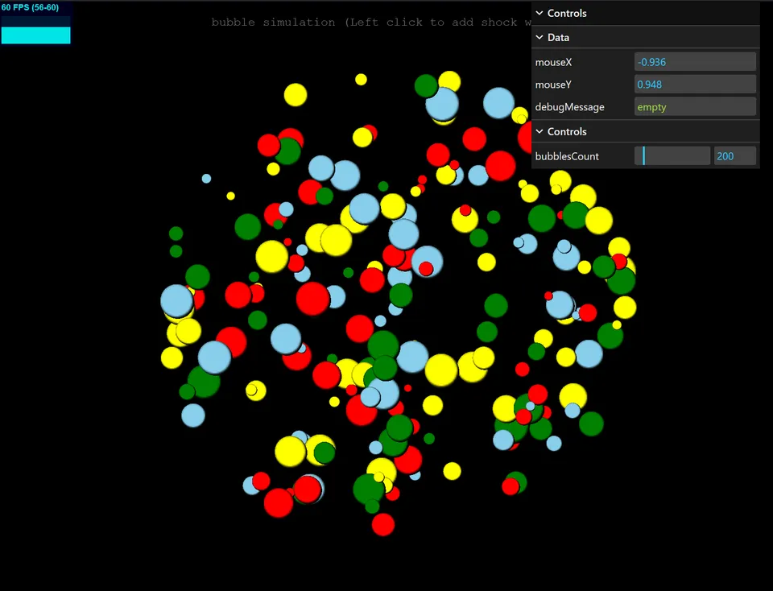
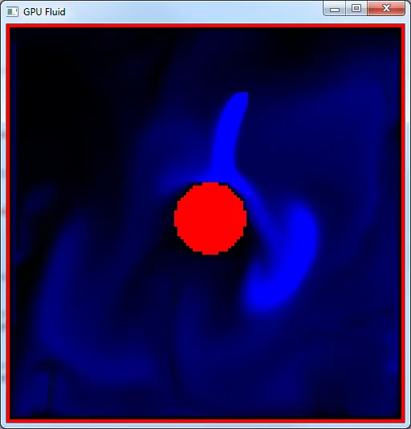
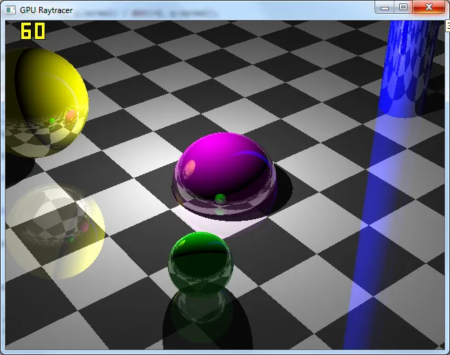

Barcelona, Spain
Mike Smahin
Senior Frontend / 3D Engineer
15+ years building software, with a focus on frontend engineering, real-time applications and 3D for the web and games. TypeScript, React, Angular, Three.js, WebGL & WebGPU, Unity / C#.
LinkedIn: linkedin.com/in/mike-smahin-48608226
- TypeScript
- React
- Three.js
- WebGL
- WebGPU
- Unity / C#
01 Featured demos
Live in the browser. The crowd and ocean demos need a WebGPU-capable browser (recent Chrome or Edge). The globe dashboard runs on WebGL in any modern browser.

webgpu-ocean
Real-time Tessendorf FFT ocean on the Three.js WebGPURenderer. The JONSWAP wave spectrum is evolved and inverse-FFT’d in TSL compute shaders across 3 cascades (250 m swell to 6 cm ripples). The surface has choppy displacement, Jacobian-based whitecaps, Fresnel sky reflections, sun glint and subsurface scattering, with Calm / Breeze / Storm presets.

globe-dashboard
Live earthquake dashboard built around a 3D globe, streaming the USGS real-time feed. Every event is drawn as one instanced marker, and recent events pulse in a shader. Hover or click an event to fly the camera to it. The virtualised event list, filters, KPI cards and SVG charts all stay in sync with the globe. Timeline playback, shareable URL state, dark and light themes, a responsive layout and full keyboard navigation. Falls back to a labelled snapshot when the feed is unreachable.
02 Selected graphics work
A shipped mobile game, plus earlier experiments in GPU rendering and simulation.

Redungeon 2016
Endless dungeon crawler for iOS and Android, published by Nitrome: random, increasingly difficult dungeons, dozens of traps and unlockable characters with unique skills.
Apple Editors’ Choice, rated 4.6/5 from 1.3K+ App Store ratings, and 1M+ downloads per platform. Built in Unity / C# at Eneminds, the studio I co-founded; I built everything except the design.
App Store
Source code is private

bubbles.js 2021
Thousands of bubbles drawn with GPU instancing in Three.js. Positions and velocities are simulated in GPGPU compute passes (fragment shaders over float textures).
View code →
GpuFluid 2014
2D fluid simulator on the GPU: advection, buoyancy, divergence and a Jacobi pressure solve, each as a shader pass. Add force and fluid with the mouse.
View code →
GpuRayTracer 2015
A ray tracer that runs in a fragment shader, with analytic ray–sphere, ray–plane and ray–cylinder intersections and point-light shading.
View code →03 Professional highlights
RedCore · RedCore Town
Owned RedCore Town end to end
Took the 3D web app from development to production: made it stable, 3x faster scene loading, and built RedCore Town 2100, a large interactive 3D city with game-like features.
Vimeo · Venues
Owned the 3D component and simulation
Virtual conference platform: up to 10,000 avatars at a stable 60+ FPS on regular hardware.
Vimeo · Live Events
Frontend at scale with React / TypeScript
Built Live Events features on a large-scale production platform, focused on UI performance and contributed to the shared design system. Better automated testing meant fewer regressions and more frequent releases.
Eneminds · Redungeon
Shipped a mobile game in Unity / C#
1M+ downloads per platform for Redungeon, built by a small team.
04 Advent of Code
Solved by hand, year after year, across five languages. Day counts are the days with a solution committed in each repo.
2025TypeScript
6 / 12 days
2024JavaScript
12 / 25 days
2023JavaScript
19 / 25 days
2022JavaScript
16 / 25 days
2021C#
25 / 25 days ★
2020Python
25 / 25 days ★
2019Ruby
25 / 25 days ★
2018Ruby
24 / 25 days
2017Ruby
25 / 25 days ★
2016Ruby
25 / 25 days ★
2015RubyC#
25 / 25 days ★
227 days of puzzles across 11 events · Ruby · Python · C# · JavaScript · TypeScript
05 Writing
Posts on math, physics and programming.
- You Don't Like Math? Then We're Coming to You mathoriginal (RU)
- OBFUSCATED programmingoriginal (RU)
- // the below code needs to be commented out programmingoriginal (RU)
- Per Aspera ad Astra physicsoriginal (RU)
- Mark V. Shaney programmingoriginal (RU)
- How Do You Draw a Wall? programmingoriginal (RU)
- So How Do You Use Your GPU? programmingoriginal (RU)
- The Year 11111011100 physicsoriginal (RU)
- Quantum Leap physicsoriginal (RU)
- The Fractal Geometry of Nature mathoriginal (RU)
- The Return physicsoriginal (RU)
- Sound in a Vacuum physicsoriginal (RU)
- Stories About Hilbert mathoriginal (RU)
- Feynman, the Shuttle and Ice Water physicsoriginal (RU)
- Moon Dust and the Collapse of Modern Science physicsoriginal (RU)
- Fear and Loathing in the Rings of Saturn physicsoriginal (RU)
- Apollo and the Moon Myths physicsoriginal (RU)
- The Birth of Complexity physicsoriginal (RU)
- Unnatural Selection programmingoriginal (RU)
- Program Evolution programmingoriginal (RU)
- Big Lint Party programmingoriginal (RU)
- Mathematical Freedom mathoriginal (RU)
- Elegant Whitespace programmingoriginal (RU)
- What's in Your Number? mathoriginal (RU)
- The Philosophy of Programs programmingoriginal (RU)
- Word Generator mathoriginal (RU)
- An Ordinary Series mathoriginal (RU)
- The Monkey and the Weight mathoriginal (RU)
- A Couple of Glitches programmingoriginal (RU)
- Magicicada mathoriginal (RU)
- Solve This mathoriginal (RU)
- leaf.gif mathoriginal (RU)
- The Analytical Engine mathoriginal (RU)
- A Cute Formula mathoriginal (RU)